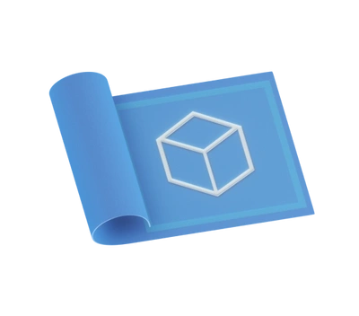

Browse free and open source ideas to inspire you.
Here you will find the building blocks to create engaging and interactive experiences in Decentraland. Any creator can customize these with complete creative freedom.
5 resources CLEAR FILTERS

Quests Client
A library to manage quests from the scene, to track a player's progress. Connect to the server, update the UI, and more. See docs.decentraland.org/creator/quests/sdk-client
Show Management Library
A library that lets you handle the sync of streamed video with events in the scene. Useful for example to animate spotlights and other things in the 3D space so that they are in sync with music.
UI Toolkit
A collection of tools for common UI requirements for Decentraland scenes.
NPC Toolkit
A collection of tools for creating Non-Player-Characters (NPCs). These are capable of having conversations with the player, and play different animations.
Utils library
A very handy collection of common tasks made simple. Gradually move, rotate or scale over time. Add trigger areas, delay an action, run an event periodically, and more!
1 filter active